Week 3: Grammar of Graphics & ggplot2
Learning Objectives
By the end of this week, you will be able to:
- Explain the grammar of graphics framework and its seven components
- Build ggplot2 graphics layer by layer from data to finished visualization
- Distinguish between aesthetic mappings inside and outside
aes() - Use a variety of geometries (points, lines, bars, histograms, boxplots)
- Apply faceting to create small multiples
- Customize scales, labels, and themes for publication-quality graphics
- Combine multiple plots into a single figure using the
patchworkpackage - Save plots at appropriate sizes and resolutions with
ggsave()
The Grammar of Graphics
In 1999, statistician Leland Wilkinson published The Grammar of Graphics, a book that would fundamentally change how we think about building visualizations. Wilkinson’s central insight was that statistical graphics are not a collection of unrelated chart types – scatterplots, bar charts, histograms, and so on – but rather that every graphic can be described as a combination of a few underlying components, assembled according to a set of rules.
Just as English grammar gives us rules for constructing sentences from nouns, verbs, and adjectives, the grammar of graphics gives us rules for constructing visualizations from data, aesthetics, and geometries. A sentence is not just a random collection of words; it follows a structure. A graphic is not just a random collection of marks on a page; it follows a structure too.
In 2005, Hadley Wickham translated Wilkinson’s theoretical framework into a practical R package called ggplot2 (the “gg” stands for “grammar of graphics”). Wickham’s implementation, described in his 2010 paper “A Layered Grammar of Graphics,” organizes every visualization into a series of layers. This is the system we will use for the rest of the course.
The “gg” in ggplot2 stands for Grammar of
Graphics. The “2” indicates that this is the second iteration of
Wickham’s package. The first version, ggplot, was never
widely released. When we refer to “ggplot” in code, we mean the
ggplot() function from the ggplot2
package.
The Seven Layers
Every ggplot2 graphic is constructed from up to seven layers. Not every plot uses all seven, but understanding each one gives you complete control over your visualizations:
| Layer | Description | Example |
|---|---|---|
| Data | The dataset being visualized | ggplot(mpg, ...) |
| Aesthetics | Mappings from data variables to visual properties | aes(x = displ, y = hwy, color = class) |
| Geometries | The visual marks that represent data points | geom_point(), geom_line(),
geom_col() |
| Facets | Splitting the plot into panels by a variable | facet_wrap(~class) |
| Statistics | Statistical transformations of the data | stat_smooth(), binning, counting |
| Coordinates | The coordinate system | coord_flip(),
coord_polar() |
| Themes | Non-data visual appearance | theme_minimal(), font sizes, grid
lines |
Think of it this way: the data is your raw material. Aesthetics are the instructions for how to translate that material into visual form. Geometries are the shapes that appear on the page. Facets let you repeat the same plot for subsets of the data. Statistics transform your data before it reaches the geometry. Coordinates define the space in which everything is drawn. And themes control the final appearance of everything that is not data.
Ignatian Reflection: Intentional Design
The grammar of graphics is, at its heart, a discipline of intentionality. It asks you to be deliberate about every layer – to choose your data carefully, to map variables to aesthetics purposefully, to select geometries that reveal rather than obscure. This mirrors the Ignatian practice of discernment: every choice should be made with reflection, every element should serve the truth. When you build a ggplot, ask yourself at each layer: Does this serve clarity? Does this help the viewer see what is real?
Common ggplot2 Errors
Before we start writing code, let us address the errors you are most likely to encounter. In an asynchronous course, you cannot raise your hand when something goes wrong – so study this box carefully and bookmark it. Nearly every student hits at least one of these during their first week with ggplot2.
Troubleshooting ggplot2: The Six Most Common Errors
1. Error: unexpected '+'
You started a new line before the +. The
+ must be at the end of the previous line,
not the beginning of the next.
# WRONG -- R thinks line 1 is a complete command
ggplot(mpg, aes(x = displ, y = hwy))
+ geom_point()
# RIGHT -- the + tells R "there is more coming"
ggplot(mpg, aes(x = displ, y = hwy)) +
geom_point()2. Error: object 'displ' not found
Did you forget aes()? Column names must be wrapped
inside aes() so that ggplot2 knows to look for them in the
data frame, not in your global environment.
# WRONG
ggplot(mpg, x = displ, y = hwy) + geom_point()
# RIGHT
ggplot(mpg, aes(x = displ, y = hwy)) + geom_point()3.
Error: could not find function "ggplot"
You forgot to load the package. Run library(tidyverse)
(or library(ggplot2)) at the top of your script before
calling any ggplot functions. This must be done every time you start a
new R session.
4. Plot colors are not changing
Are you putting color = "blue" inside or
outside aes()? Inside aes() maps a
variable to color (each value gets a different color). Outside
aes() sets a single fixed color for all points.
# Maps the variable class to color (a legend appears)
geom_point(aes(color = class))
# Sets ALL points to blue (no legend)
geom_point(color = "blue")
# COMMON MISTAKE -- puts a literal string inside aes()
# This creates a legend with one entry labeled "blue"
geom_point(aes(color = "blue"))5.
Error: stat_count() must not be used with a y aesthetic
You used geom_bar() but also provided a y
aesthetic. geom_bar() counts rows for you – it creates its
own y. If you already have pre-computed y values, use
geom_col() instead.
# WRONG -- geom_bar() tries to count, but you gave it y
ggplot(df, aes(x = category, y = value)) + geom_bar()
# RIGHT -- geom_col() uses the y values you provide
ggplot(df, aes(x = category, y = value)) + geom_col()6. Error: cannot open the connection with
ggsave()
The file path you specified does not exist, or you do not have write
permission. Check that the folder exists before saving. Use
dir.exists("my_folder") to verify.
# Check the folder exists first
dir.exists("output") # returns TRUE or FALSE
# Save to an existing folder
ggsave("output/my_plot.png", width = 8, height = 5, dpi = 300)Building a Plot Layer by Layer
The best way to understand the grammar of graphics is to build a plot
one layer at a time. We will use the mpg dataset, which is
built into ggplot2 and contains fuel economy data for 234 cars.
Let us begin with nothing but the data and an aesthetic mapping, and then add layers one at a time. Each step below is a separately runnable code chunk – run them in order and watch the plot evolve.
Step 1: Data and Aesthetic Mapping
This creates an empty canvas. ggplot2 knows what data to use and which variables to map to the x and y axes, but it has no instructions for how to draw anything yet.
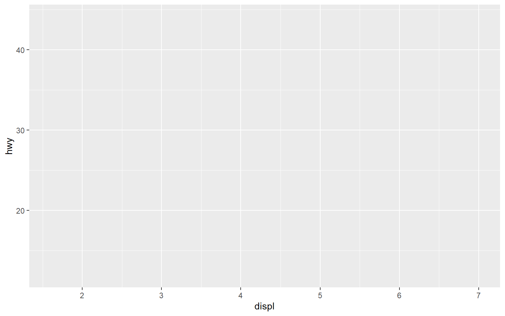
Step 2: Add a Geometry
Now we add geom_point(), and the data appears as a
scatterplot. The geometry tells ggplot2 how to represent each
observation – in this case, as a dot.
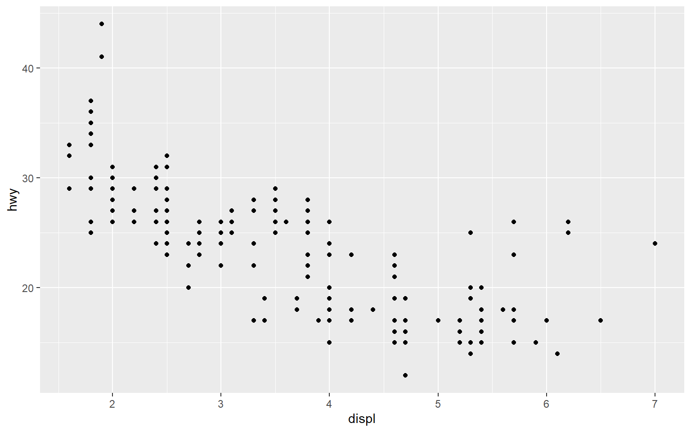
Step 3: Map Color to a Variable
By adding color = class inside aes(), each
vehicle class gets a distinct color. A legend is automatically
generated.
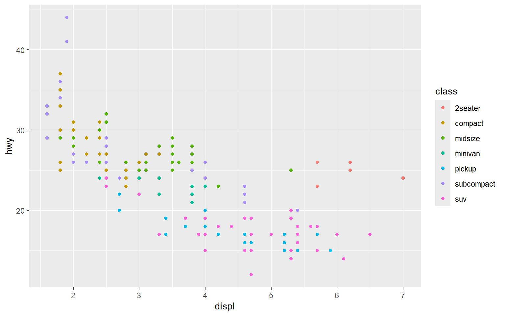
Step 4: Add a Statistical Layer
A linear smoother for each class reveals the group-level trends. The
se = FALSE argument suppresses the confidence interval
shading to keep the plot clean.
ggplot(mpg, aes(x = displ, y = hwy, color = class)) +
geom_point() +
geom_smooth(method = "lm", se = FALSE)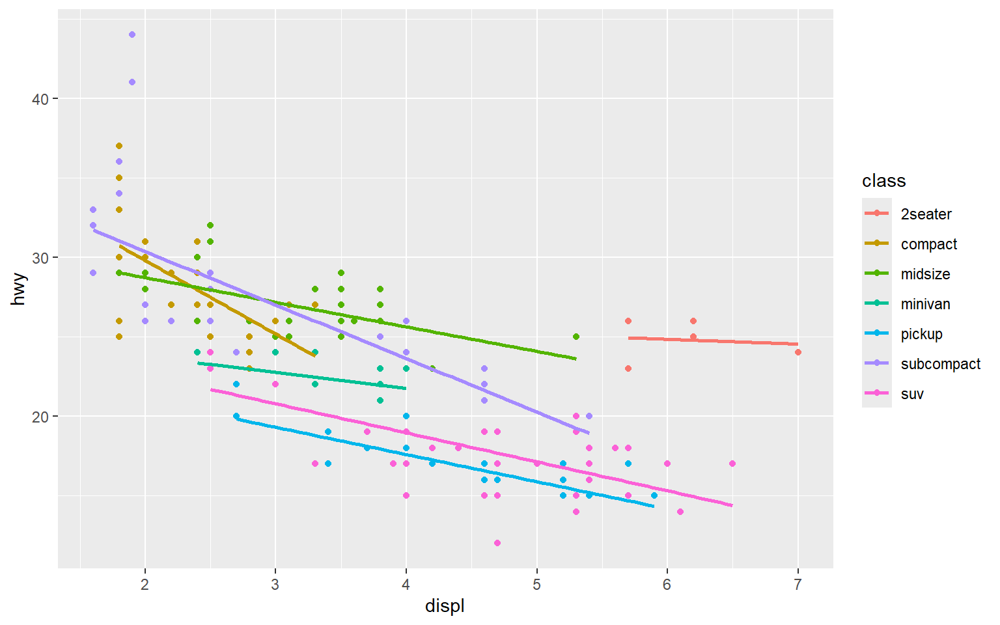
Step 5: Add Labels
Good labels tell the reader what they are looking at. The
labs() function sets the title, subtitle, axis labels, and
legend title all in one call.
ggplot(mpg, aes(x = displ, y = hwy, color = class)) +
geom_point() +
geom_smooth(method = "lm", se = FALSE) +
labs(
title = "Engine Size vs. Highway Fuel Economy",
subtitle = "Larger engines tend to have lower fuel economy",
x = "Engine Displacement (L)",
y = "Highway MPG",
color = "Vehicle Class"
)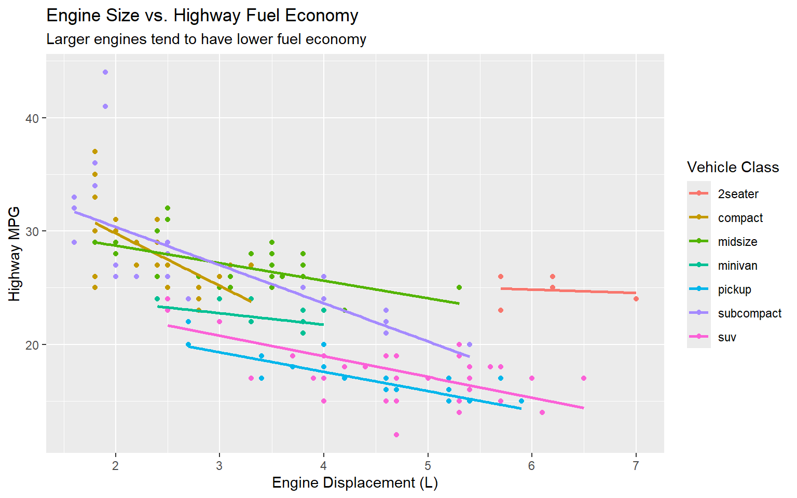
Step 6: Apply a Theme
Finally, we replace the default gray background with a cleaner
theme_minimal(). The base_size argument
controls the overall font size.
ggplot(mpg, aes(x = displ, y = hwy, color = class)) +
geom_point() +
geom_smooth(method = "lm", se = FALSE) +
labs(
title = "Engine Size vs. Highway Fuel Economy",
subtitle = "Larger engines tend to have lower fuel economy",
x = "Engine Displacement (L)",
y = "Highway MPG",
color = "Vehicle Class"
) +
theme_minimal(base_size = 14)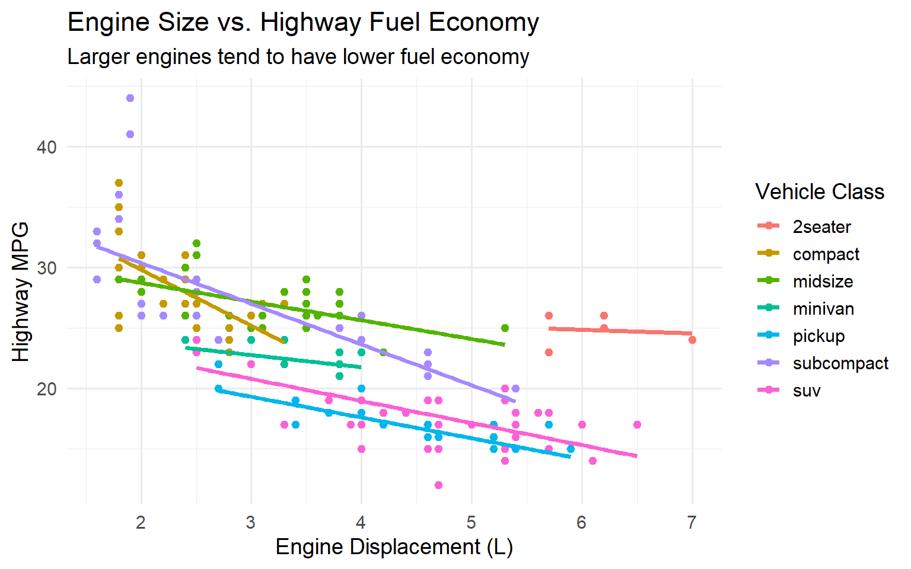
Notice how each layer adds something specific. The plot evolves from an empty coordinate system to a rich, informative graphic. This is the power of the layered grammar: you can think about one thing at a time.
The Fluent Pipeline Style
Here is the same final plot written as a single, fluent pipeline – the style you will typically use in practice:
ggplot(mpg, aes(x = displ, y = hwy, color = class)) +
geom_point(size = 2, alpha = 0.7) +
geom_smooth(method = "lm", se = FALSE, linewidth = 0.8) +
labs(
title = "Engine Size vs. Highway Fuel Economy",
subtitle = "Larger engines tend to have lower fuel economy",
x = "Engine Displacement (L)",
y = "Highway MPG",
color = "Vehicle Class"
) +
theme_minimal(base_size = 14)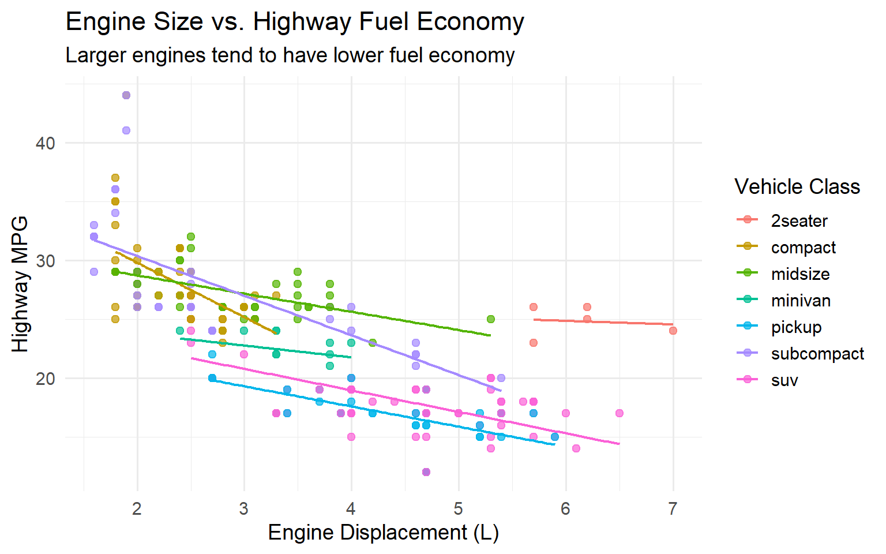
Tip: The + operator in ggplot2 is how
you add layers. It is conceptually similar to the %>%
pipe, but ggplot2 was created before the pipe became standard in R, so
it uses + instead. A common mistake is to use
%>% inside a ggplot chain – this will produce an error.
Use %>% to pipe data into
ggplot(), then switch to + for adding
layers.
Aesthetic Mappings – aes()
Aesthetics are the bridge between your data and the visual properties
of your plot. The aes() function maps variables in your
data to visual channels such as position (x, y), color, size, shape, and
transparency (alpha).
The critical distinction to understand is:
- Inside
aes(): The visual property varies with the data. Each data value gets a different color, size, or position. - Outside
aes(): The visual property is fixed for all observations. Every point gets the same color, size, or shape.
This is one of the most common sources of confusion for beginners, so let us see the difference side by side:
library(patchwork)
# Color MAPPED to a data variable (inside aes)
p1 <- ggplot(mpg, aes(x = displ, y = hwy)) +
geom_point(aes(color = class), size = 2, alpha = 0.8) +
labs(title = "Color mapped to data (inside aes)") +
theme_minimal(base_size = 12)
# Color SET to a fixed value (outside aes)
p2 <- ggplot(mpg, aes(x = displ, y = hwy)) +
geom_point(color = "#C41E3A", size = 2, alpha = 0.8) +
labs(title = "Color fixed (outside aes)") +
theme_minimal(base_size = 12)
p1 + p2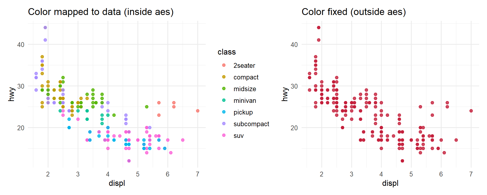
In the left panel, each vehicle class gets its own color, and a legend is automatically generated. In the right panel, every point is Gonzaga red regardless of its class, and there is no legend because color is not encoding any information.
Here is a summary of common aesthetic mappings:
| Aesthetic | Description | Example |
|---|---|---|
x, y |
Position on the axes | aes(x = displ, y = hwy) |
color |
Outline color (points, lines) or fill color (text) | aes(color = class) |
fill |
Interior fill color (bars, boxes, areas) | aes(fill = class) |
size |
Size of points or width of lines | aes(size = cyl) |
shape |
Shape of points (circle, triangle, square, etc.) | aes(shape = drv) |
alpha |
Transparency (0 = invisible, 1 = opaque) | aes(alpha = year) |
linetype |
Type of line (solid, dashed, dotted) | aes(linetype = drv) |
Geometries
Geometries – or geoms – are the visual marks that represent your data. Choosing the right geom is one of the most important decisions you make when building a visualization. Each geom is suited to different types of data and different analytical questions.
Points (geom_point)
Scatterplots are the workhorse of exploratory data analysis. Use
geom_point() when you want to show the relationship between
two continuous variables.
ggplot(mpg, aes(x = displ, y = hwy, color = drv)) +
geom_point(size = 2, alpha = 0.7) +
scale_color_manual(
values = c("4" = "#002967", "f" = "#C41E3A", "r" = "#B4975A"),
labels = c("4" = "4-wheel", "f" = "Front", "r" = "Rear")
) +
labs(
title = "Scatterplot with geom_point()",
subtitle = "Engine displacement vs. highway MPG by drive type",
x = "Engine Displacement (L)",
y = "Highway MPG",
color = "Drive Type"
) +
theme_minimal(base_size = 13)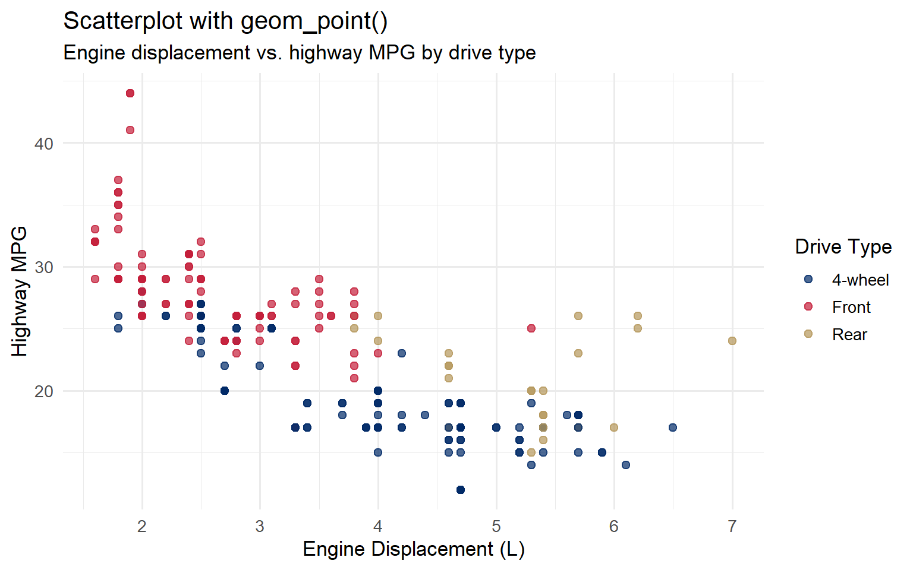
Lines (geom_line)
Line charts are ideal for showing trends over time. Use
geom_line() when you have a continuous x-axis (often a date
or time) and want to emphasize the flow of values.
economics %>%
ggplot(aes(x = date, y = unemploy / 1000)) +
geom_line(color = "#002967", linewidth = 0.8) +
labs(
title = "U.S. Unemployment Over Time",
subtitle = "Monthly unemployment figures from 1967 to 2015",
y = "Unemployed (millions)",
x = NULL
) +
theme_minimal(base_size = 13)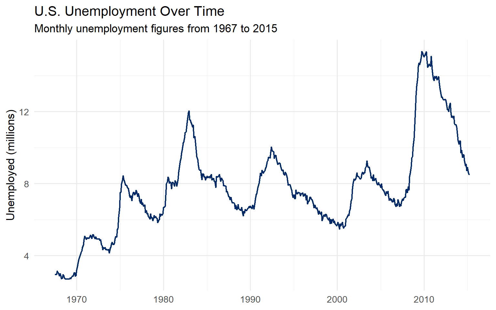
Bars (geom_col / geom_bar)
Bar charts are excellent for comparing quantities across categories.
Use geom_col() when your data already contains the values
you want to plot; use geom_bar() when you want ggplot2 to
count observations for you.
mpg %>%
count(class) %>%
mutate(class = fct_reorder(class, n)) %>%
ggplot(aes(x = n, y = class)) +
geom_col(fill = "#002967") +
geom_text(aes(label = n), hjust = -0.3, size = 4, color = "#002967") +
labs(
title = "Vehicle Count by Class",
subtitle = "Number of vehicles in the mpg dataset by class",
x = "Count",
y = NULL
) +
expand_limits(x = 70) +
theme_minimal(base_size = 13)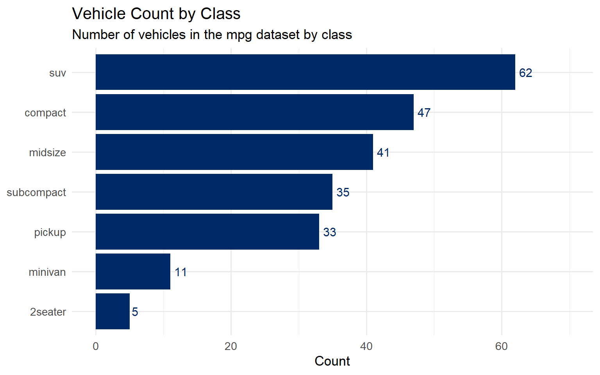
Histogram (geom_histogram)
Histograms show the distribution of a single continuous variable by dividing it into bins and counting the number of observations in each bin.
ggplot(mpg, aes(x = hwy)) +
geom_histogram(binwidth = 2, fill = "#002967", color = "white") +
labs(
title = "Distribution of Highway MPG",
subtitle = "Binwidth = 2 MPG",
x = "Highway MPG",
y = "Count"
) +
theme_minimal(base_size = 13)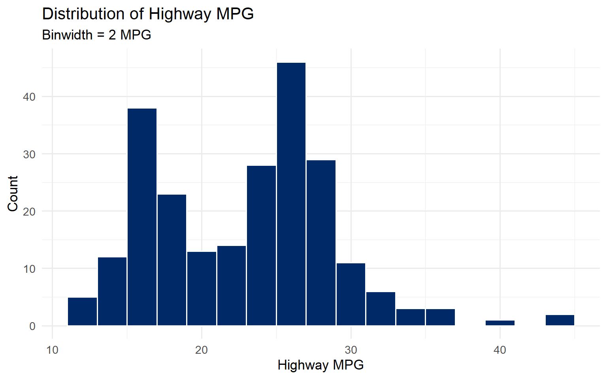
Boxplot (geom_boxplot)
Boxplots summarize the distribution of a continuous variable across groups. They show the median, interquartile range, and outliers at a glance.
ggplot(mpg, aes(x = fct_reorder(class, hwy, .fun = median), y = hwy)) +
geom_boxplot(fill = "#eff6ff", color = "#002967", outlier.color = "#C41E3A") +
coord_flip() +
labs(
title = "Highway MPG by Vehicle Class",
subtitle = "Classes ordered by median highway MPG",
x = NULL,
y = "Highway MPG"
) +
theme_minimal(base_size = 13)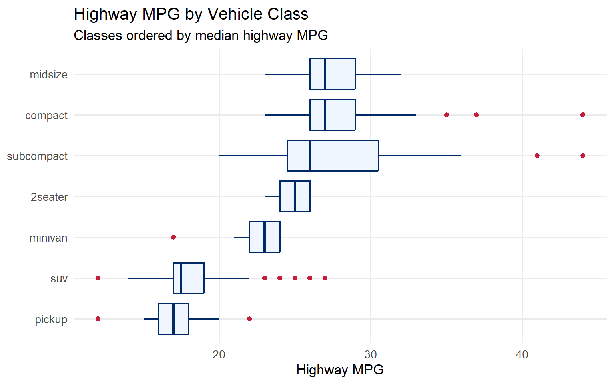
Choosing the Right Geom: The choice of geometry
depends on the types of variables you have and the question you are
asking. Two continuous variables? Start with geom_point().
One continuous variable? Try geom_histogram() or
geom_density(). One categorical and one continuous?
Consider geom_boxplot() or geom_col(). A trend
over time? Use geom_line(). When in doubt, try several and
see which one reveals the most about your data.
Faceting
Faceting splits your data by one or more categorical variables and creates a separate panel for each level. This technique – sometimes called small multiples – is one of the most powerful tools in data visualization. It allows your viewer to compare patterns across groups while keeping a consistent scale.
ggplot2 provides two faceting functions:
facet_wrap(~variable)– wraps panels into a rectangular layout. Best when you have a single faceting variable.facet_grid(row_variable ~ col_variable)– creates a matrix of panels. Best when you want to cross two variables.
ggplot(mpg, aes(x = displ, y = hwy)) +
geom_point(color = "#002967", alpha = 0.6, size = 1.5) +
geom_smooth(method = "lm", se = FALSE, color = "#C41E3A", linewidth = 0.8) +
facet_wrap(~class, ncol = 4) +
labs(
title = "Displacement vs. Highway MPG by Vehicle Class",
subtitle = "Each panel shows one vehicle class with a linear trend line",
x = "Engine Displacement (L)",
y = "Highway MPG"
) +
theme_minimal(base_size = 12)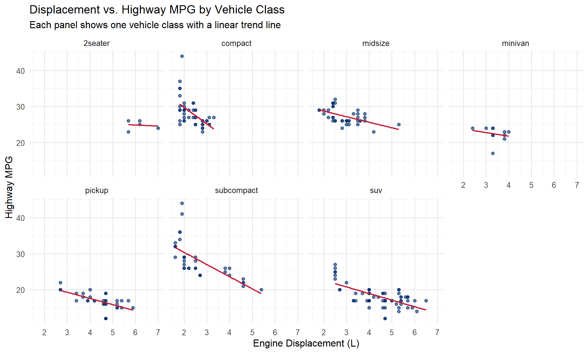
Notice how the faceted view reveals patterns that a single scatterplot obscures. For example, the relationship between displacement and fuel economy is very different for 2-seater sports cars (which are light despite large engines) compared to SUVs.
Scales in facets: By default, all panels share the
same x and y scales. This is usually what you want because it makes
comparisons fair. If you need each panel to have its own scale (for
example, when the ranges differ dramatically), use
scales = "free", scales = "free_x", or
scales = "free_y" inside facet_wrap().
Scales
Scales control how data values are mapped to visual
properties. Every aesthetic mapping has an associated scale, whether or
not you specify one explicitly. When you write
aes(x = displ), ggplot2 automatically creates a continuous
x scale. When you write aes(color = class), it creates a
discrete color scale.
Customizing scales gives you control over:
- Axis breaks and labels – where tick marks appear and what they say
- Color palettes – which colors represent your data
- Transformations – log scales, square root scales, reversed axes
- Formatting – dollar signs, percentages, commas
Common Scale Functions
| Function | Purpose |
|---|---|
scale_x_continuous() /
scale_y_continuous() |
Customize continuous axes |
scale_x_discrete() /
scale_y_discrete() |
Customize categorical axes |
scale_color_manual() /
scale_fill_manual() |
Set specific colors by hand |
scale_color_brewer() /
scale_fill_brewer() |
Use ColorBrewer palettes |
scale_color_viridis_c() /
scale_fill_viridis_c() |
Perceptually uniform, colorblind-friendly |
scale_x_log10() /
scale_y_log10() |
Log-transformed axes |
library(scales)
ggplot(diamonds %>% sample_n(5000), aes(x = carat, y = price, color = cut)) +
geom_point(alpha = 0.4, size = 1) +
scale_y_continuous(labels = dollar_format()) +
scale_x_continuous(breaks = seq(0, 5, by = 0.5)) +
scale_color_brewer(palette = "Dark2") +
labs(
title = "Diamond Price vs. Carat",
subtitle = "5,000 randomly sampled diamonds from the diamonds dataset",
x = "Carat",
y = "Price (USD)",
color = "Cut Quality"
) +
theme_minimal(base_size = 13)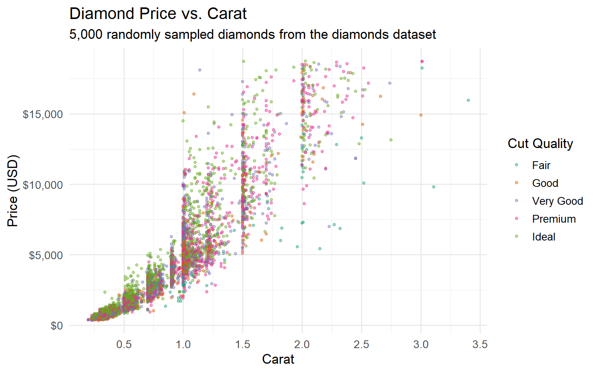
Gonzaga Color Palette
Throughout this course, we will frequently use Gonzaga’s official colors. Here is a reference palette you can use in your own plots:

Gonzaga University brand colors for use in data visualization.
You can define a reusable vector of Gonzaga colors:
gonzaga_colors <- c(
navy = "#002967",
red = "#C41E3A",
gold = "#B4975A",
light_blue = "#4A90D9",
light_gray = "#eff6ff"
)Themes
Themes control all of the non-data visual elements of your plot: background colors, grid lines, font sizes, axis tick marks, legend placement, and more. A well-chosen theme can elevate a serviceable plot into a professional, publication-ready graphic.
Built-in Themes
ggplot2 ships with several built-in themes:
theme_gray()– the default gray background with white grid linestheme_minimal()– a clean, minimal design (our course default)theme_classic()– a traditional look with axis lines and no gridtheme_bw()– black and white with a bordertheme_void()– completely blank (useful for maps and diagrams)
The ggthemes package adds many more, inspired by famous
publications and designers:
theme_economist()– styled like The Economist magazinetheme_fivethirtyeight()– styled like FiveThirtyEighttheme_tufte()– inspired by Edward Tufte’s minimalist philosophy
library(ggthemes)
base <- ggplot(mpg, aes(x = displ, y = hwy)) +
geom_point(color = "#002967", alpha = 0.7) +
labs(x = "Displacement (L)", y = "Highway MPG")
(base + theme_minimal() + labs(subtitle = "theme_minimal()")) +
(base + theme_classic() + labs(subtitle = "theme_classic()")) +
(base + theme_economist() + labs(subtitle = "theme_economist()")) +
(base + theme_tufte() + labs(subtitle = "theme_tufte()")) +
plot_layout(ncol = 2) +
plot_annotation(title = "Theme Comparison",
theme = theme(plot.title = element_text(size = 16, face = "bold")))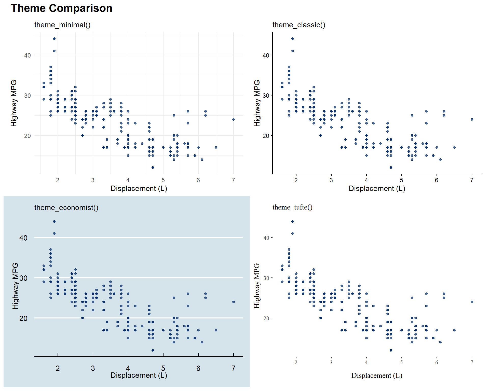
Custom Theme Elements
You can override individual theme elements using the
theme() function. Every element is controlled by one of
four functions:
element_text()– controls text (size, color, face, family, angle)element_line()– controls lines (color, linewidth, linetype)element_rect()– controls rectangles (fill, color, linewidth)element_blank()– removes the element entirely
ggplot(mpg, aes(x = displ, y = hwy, color = class)) +
geom_point(size = 2, alpha = 0.7) +
labs(
title = "A Custom-Themed Plot",
subtitle = "Demonstrating individual theme element overrides",
x = "Engine Displacement (L)",
y = "Highway MPG",
color = "Vehicle Class"
) +
theme_minimal(base_size = 13) +
theme(
plot.title = element_text(face = "bold", color = "#002967", size = 16),
plot.subtitle = element_text(color = "#666666", size = 12),
axis.title = element_text(color = "#002967"),
panel.grid.minor = element_blank(),
legend.position = "bottom",
legend.title = element_text(face = "bold")
)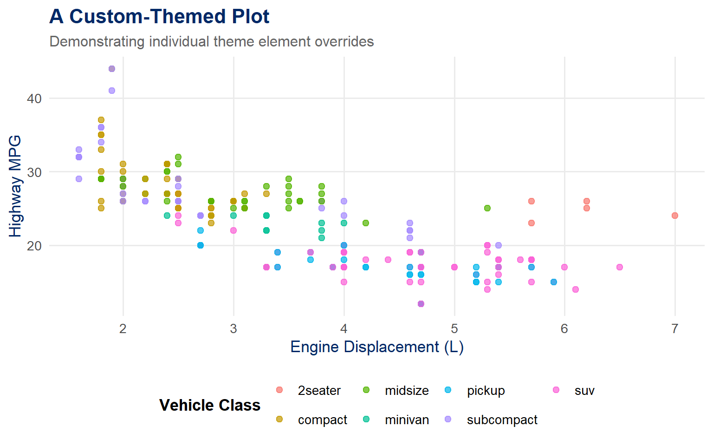
Tip: Build a reusable theme. If you find yourself
applying the same theme() overrides to every plot, create a
custom theme function. You can then apply it with a single
+ theme_gonzaga() call:
theme_gonzaga <- function(base_size = 13) {
theme_minimal(base_size = base_size) %+replace%
theme(
plot.title = element_text(face = "bold", color = "#002967", size = base_size + 3),
plot.subtitle = element_text(color = "#666666"),
axis.title = element_text(color = "#002967"),
panel.grid.minor = element_blank(),
legend.position = "bottom"
)
}Bonus: Tufte’s Redesigned Boxplot
Edward Tufte proposed a stripped-down version of the boxplot that
removes the “box” entirely, replacing it with a thin line for the
interquartile range and a point or gap for the median. This maximizes
the data-ink ratio while preserving all essential information. The
ggthemes package provides geom_tufteboxplot()
for this purpose.
ggplot(mpg, aes(x = class, y = hwy)) +
geom_tufteboxplot(color = "#002967") +
labs(
title = "Tufte-Style Boxplot",
subtitle = "Minimal ink, maximum data -- compare to the standard boxplot above",
x = "Vehicle Class",
y = "Highway MPG"
) +
theme_tufte(base_size = 13) +
theme(axis.text.x = element_text(angle = 30, hjust = 1))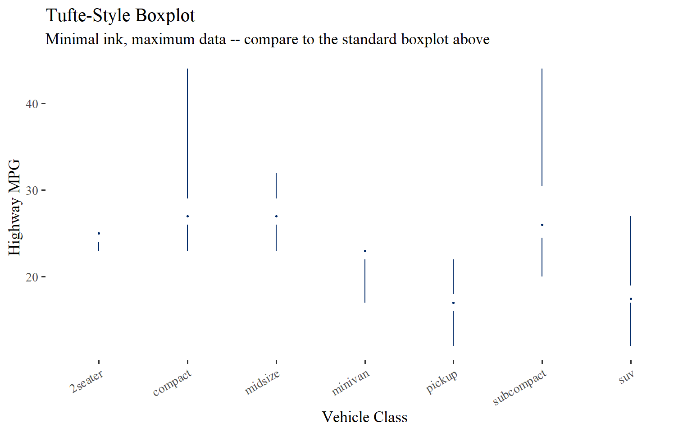
Compare this to the standard boxplot in the Geometries section above. The Tufte version conveys the same distributional information – median, spread, outliers – using far less ink. Every mark on the page is doing real work. This is the data-ink ratio in action.
About ggthemes: The ggthemes package
provides several Tufte-inspired elements including
theme_tufte(), geom_tufteboxplot(), and
geom_rangeframe(). These are excellent tools for applying
design principles directly in ggplot2.
Combining Multiple Plots with patchwork
The patchwork package makes it easy to combine multiple
ggplot2 plots into a single figure. You have already seen it in action
above. Here is a quick reference for its operators:
| Operator | Effect |
|---|---|
p1 + p2 |
Side by side |
p1 / p2 |
Stacked vertically |
p1 + p2 + plot_layout(ncol = 1) |
Stacked with explicit layout |
(p1 + p2) / p3 |
Two on top, one on bottom |
plot_annotation(title = "...") |
Add an overall title |
p_scatter <- ggplot(mpg, aes(displ, hwy)) +
geom_point(color = "#002967", alpha = 0.6) +
labs(title = "Scatterplot", x = "Displacement", y = "Highway MPG") +
theme_minimal(base_size = 11)
p_hist <- ggplot(mpg, aes(x = hwy)) +
geom_histogram(binwidth = 2, fill = "#C41E3A", color = "white") +
labs(title = "Histogram", x = "Highway MPG", y = "Count") +
theme_minimal(base_size = 11)
p_box <- ggplot(mpg, aes(x = drv, y = hwy)) +
geom_boxplot(fill = "#B4975A", color = "#002967") +
labs(title = "Boxplot", x = "Drive Type", y = "Highway MPG") +
theme_minimal(base_size = 11)
p_scatter + p_hist + p_box +
plot_annotation(
title = "Three Views of the mpg Dataset",
theme = theme(plot.title = element_text(face = "bold", size = 14))
)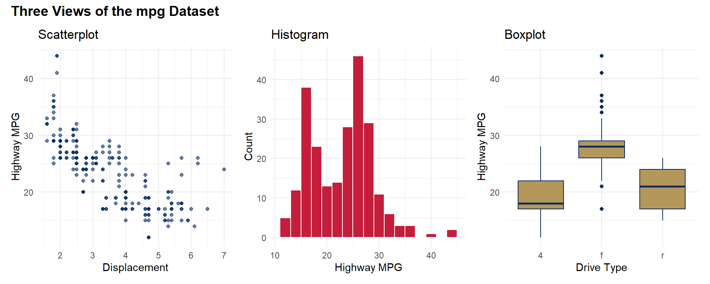
Saving Plots with ggsave()
Once you have created a publication-quality graphic, you need to save
it at the right size and resolution. The ggsave() function
makes this straightforward:
# Save the last plot displayed
ggsave("my_plot.png", width = 8, height = 5, dpi = 300)
# Save a specific plot object
my_plot <- ggplot(mpg, aes(displ, hwy)) +
geom_point(color = "#002967") +
theme_minimal()
ggsave("my_plot.png", plot = my_plot, width = 8, height = 5, dpi = 300)
# Save as PDF (vector format -- great for print)
ggsave("my_plot.pdf", plot = my_plot, width = 8, height = 5)
# Save as SVG (vector format -- great for web)
ggsave("my_plot.svg", plot = my_plot, width = 8, height = 5)Resolution guidelines:
- Screen/web: 72–150 dpi is sufficient
- Presentations: 150–200 dpi
- Print/publication: 300 dpi or higher
- Vector formats (PDF, SVG) are resolution-independent and are preferred for publications
Putting It All Together
Let us build one more polished visualization that incorporates
everything we have learned this week. We will use the
diamonds dataset to create a comprehensive view of diamond
characteristics:
diamonds %>%
filter(carat <= 3) %>%
ggplot(aes(x = carat, y = price)) +
geom_hex(bins = 40) +
scale_fill_gradient(low = "#eff6ff", high = "#002967", labels = comma_format()) +
scale_y_continuous(labels = dollar_format()) +
facet_wrap(~cut, ncol = 5) +
labs(
title = "Diamond Price vs. Carat by Cut Quality",
subtitle = "Hexagonal binning reveals density patterns across 50,000+ diamonds",
x = "Carat",
y = "Price (USD)",
fill = "Count"
) +
theme_minimal(base_size = 11) +
theme(
plot.title = element_text(face = "bold", color = "#002967"),
strip.text = element_text(face = "bold", color = "#002967"),
legend.position = "bottom"
)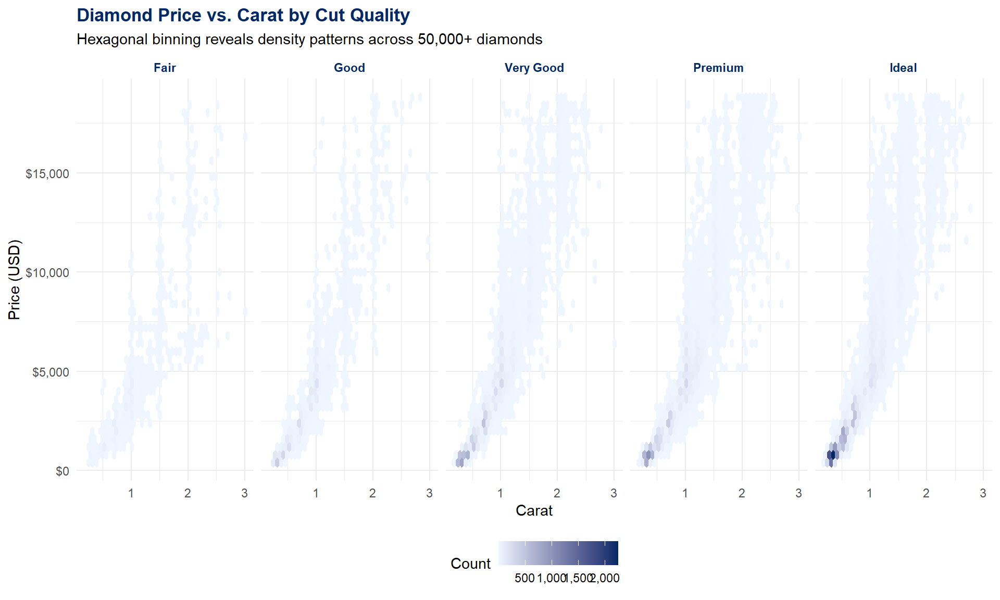
This single plot uses data (diamonds), aesthetics (x, y, fill), a geometry (hexagonal bins), a scale (gradient fill, dollar-formatted y-axis), faceting (by cut), labels, and a customized theme. Every layer of the grammar of graphics is working together.
Ignatian Reflection: Magis in Visualization
The Ignatian principle of magis – the “more” – calls us not to settle for what is merely adequate but to pursue excellence for the greater good. In data visualization, magis means not settling for the default. The default gray theme, the default axis labels, the default color palette – these are starting points, not endpoints. Every design choice is an opportunity to communicate more clearly, more honestly, more beautifully. As Wickham himself wrote, “A good visualization shows you things you did not expect, or raises new questions about the data.” Pursue that more.
Exercises
Week 3 Exercises
Exercise 1: Your First Layered Plot
Using the mpg dataset, build a scatterplot of
cty (city MPG, x-axis) vs. hwy (highway MPG,
y-axis). Fill in the blanks in the template below. Map the
drv variable to color using Gonzaga colors, add axis labels
and a title, and apply theme_minimal().
Template – fill in the ___ blanks:
library(tidyverse)
ggplot(___, aes(x = ___, y = ___, color = ___)) +
geom_point(size = 2, alpha = 0.7) +
scale_color_manual(
values = c("4" = "#002967", "f" = "___", "r" = "___"),
labels = c("4" = "4-wheel", "f" = "Front", "r" = "Rear")
) +
labs(
title = "___",
x = "City MPG",
y = "Highway MPG",
color = "Drive Type"
) +
theme_minimal(base_size = 13)After completing the template, write 1–2 sentences interpreting the relationship between city and highway fuel economy. Is there a pattern? Do the drive types cluster differently?
Exercise 2: Bar Chart with geom_col()
The code below summarizes the diamonds dataset by
cut, calculating the average price for each cut quality.
Fill in the blanks to create a horizontal bar chart with direct labels.
Remember: geom_col() is for pre-computed values,
geom_bar() is for counting.
Template – fill in the ___ blanks:
diamonds %>%
group_by(___) %>%
summarize(avg_price = mean(price)) %>%
mutate(cut = fct_reorder(cut, ___)) %>%
ggplot(aes(x = avg_price, y = ___)) +
geom_col(fill = "___") +
geom_text(aes(label = round(avg_price, 0)), hjust = -0.2, size = 3.5) +
scale_x_continuous(labels = scales::dollar_format()) +
labs(
title = "___",
subtitle = "Average price by cut quality",
x = "Average Price (USD)",
y = NULL
) +
expand_limits(x = ___) +
theme_minimal(base_size = 13)After completing the template, answer: which cut has the highest average price? Is this what you expected? Why or why not? (Hint: think about the relationship between cut quality and carat size in the diamonds dataset.)
Exercise 3: Faceted Exploration
Install the palmerpenguins package
(install.packages("palmerpenguins")) and create a faceted
scatterplot. Fill in the blanks below.
Template – fill in the ___ blanks:
library(palmerpenguins)
penguins %>%
filter(!is.na(sex)) %>%
ggplot(aes(x = bill_length_mm, y = ___, color = ___)) +
geom_point(alpha = 0.6, size = 2) +
geom_smooth(method = "___", se = FALSE) +
scale_color_manual(values = c("female" = "#C41E3A", "male" = "#002967")) +
facet_wrap(~___, ncol = 3) +
labs(
title = "Penguin Bill Dimensions by Species and Sex",
x = "Bill Length (mm)",
y = "___",
color = "Sex"
) +
theme_minimal(base_size = 12)Write 2–3 sentences interpreting what the faceted view reveals. How do bill dimensions differ across species? Does the relationship between bill length and bill depth change by species?
Exercise 4: Theme Customization and patchwork
Create two plots of the mpg dataset – a scatterplot and
a boxplot – and combine them side by side using patchwork.
Fill in the blanks below. Then write a custom
theme_gonzaga() function and apply it to both plots.
Template – fill in the ___ blanks:
library(patchwork)
# Define the custom theme
theme_gonzaga <- function(base_size = 13) {
theme_minimal(base_size = base_size) %+replace%
theme(
plot.title = element_text(face = "___", color = "#002967", size = base_size + 3),
plot.subtitle = element_text(color = "#666666"),
axis.title = element_text(color = "___"),
panel.grid.minor = element_blank(),
legend.position = "___"
)
}
# Plot 1: scatterplot
p1 <- ggplot(mpg, aes(x = displ, y = hwy)) +
geom_point(color = "#002967", alpha = 0.6) +
labs(title = "Engine Size vs. MPG", x = "Displacement (L)", y = "Highway MPG") +
theme_gonzaga()
# Plot 2: boxplot
p2 <- ggplot(mpg, aes(x = ___, y = hwy)) +
geom_boxplot(fill = "#eff6ff", color = "#002967") +
labs(title = "MPG by Drive Type", x = "Drive Type", y = "Highway MPG") +
theme_gonzaga()
p1 + p2 +
plot_annotation(
title = "___",
theme = theme(plot.title = element_text(face = "bold", size = 15))
)Exercise 5: Complete Visualization from Scratch
Using any built-in dataset (mpg, diamonds,
economics, or mtcars), build a polished
visualization entirely from scratch – no template. Your plot must
include at least five of the seven grammar of graphics layers:
- Data
- Aesthetics (at least two mapped variables)
- Geometry (your choice)
- Faceting OR a second geometry layer
- Labels (title, subtitle, axis labels)
- A customized scale (color, axis formatting, or both)
- A customized theme (modify at least two
theme()elements)
Save your final plot using ggsave() at 300 dpi, 8 inches
wide and 5 inches tall. In a few sentences below your code, explain what
story your visualization tells and which design choices you made to
support that story.
Try It: Interactive Sandbox
AI & This Concept AI tools build
ggplot2 code in layers — exactly like this sandbox. When an
AI-generated chart looks wrong, the most effective debugging question
is: which layer is broken? Is the geometry wrong? The aesthetic
mapping? The scale? Knowing the grammar makes you a better director of
AI.
Grammar of Graphics Layer Builder — Build a Plot Step by Step
Attributions
This course material draws on and is inspired by the work of many scholars and practitioners:
- Wilkinson, L. – The Grammar of Graphics (Springer, 1999; 2nd ed. 2005). The foundational theoretical framework for systematic visualization construction.
- Wickham, H. – ggplot2: Elegant Graphics for Data Analysis (Springer, 3rd ed.). The definitive guide to the R implementation of the grammar of graphics.
- Wickham, H. (2010). “A Layered Grammar of Graphics.” Journal of Computational and Graphical Statistics, 19(1), 3–28. The academic paper describing ggplot2’s design philosophy.
- Tufte, E.R. – The Visual Display of Quantitative Information (Graphics Press, 1983, 2001). Foundational design principles including the data-ink ratio and lie factor.
- Vivek H. Patil – foundational course design and materials for data visualization at Gonzaga University.